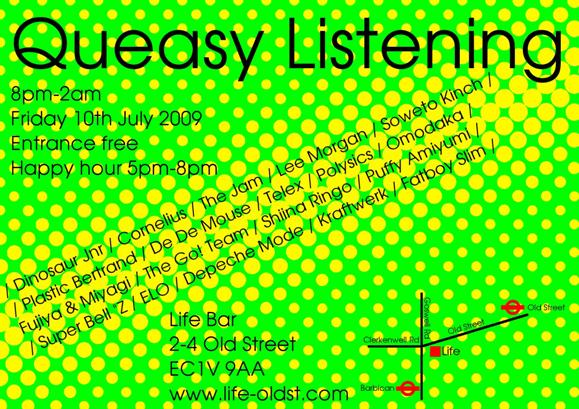

| SET 1 |  |
| Tour de France Etape 1 | 4:27 | 141 | Finishes with words 'Tour de France' then into |
| Enola Gay | 3:32 | 141 | Fades out, straight into |
| Rock me Amadeus | 8:23 | 175 | About 6:25 nothing more, fade out and start strongly |
| Atarashi | 3:33 | 150 | Mix into before 3:15 |
| This beat is technotronic | 3:38 | 122 | Mix into slowed down |
| Dentaku | 3:27 | 133 | Fade out end and strongly into |
| Mr Blue Sky | 4:00 | 175 | Cue to beat point at about 00:10 - fade out from 45secs |
| SET 2 |
| MotorMan VVVF | 4:00 | | Cue to 00:16 finish then straight into |
| Keep on truckin | 5:38 | | Cue to 00:14, the mix into speeded up |
| Just can't get enough | 6:44 | | Cue to 00:29, go til about 4:30 then mix into on end of phrase |
| Comin' on strong | 5:29 | | Cue to 00:04, end, straight into |
| Helter Skelter | 4:30 | | About 03:05 speed up and fade |
| MotorMan | 4:34 | | Cue to 00:30, fade out at nobiru and bring in |
| Waterfall | 5:02 | | Cue to 00:11, finish |
| Kinky Boots | 1:37 | | Straight into |
| Live is Life | 4:07 | | Straight into |
| A Message to you Rudy | 2:53 | | Straight into |
| Somewhere | 5:08 | | FINISH |